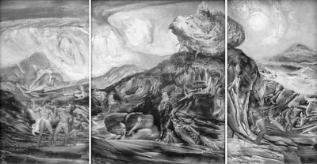

Otos ile Efiyaltes (Ephialtes); denizler ve karalar tanrısı Poseydon'un ölümlü bir kadınla ilişkileri sonucu dünyaya gelmiş ikiz çocuklardı... Ne var ki onlar, hem güçleri hem görünüşleriyle gerçek birer devdiler. Zaten Poseydon'un bütün çocukları, çok güçlü ve dev yapılı olurlardı hep...
Çünkü kıtalar ve denizler tanrısı Poseydon; dünyamızın gizemlerini çözmeye kalkmak gibi iyileştirilemez bir hastalığı olduğunu bildiği insan denen o tuhaf yaratıkların, bir gün kalkıp o uçsuz bucaksız enginlere açılacaklarından, kendi egemenliği altındaki denizleri ve kıtaları zaptetmeye kalkacaklarından kuşku duymuyordu. Bunu engellemek için de doğan çocuklarını her zaman çok güçlü devlere dönüştürüyor ve uzak denizlerle karaların fethine kalkışacak o meraklı yaratıkları çiğ çiğ yemeleri için, onları dünyamızın çeşitli limanlarına bekçi olarak yerleştiriyordu...
Ne var ki Poseydon'un son doğan ikiz çocukları Otos ile Efiyaltes; diğer kardeşlerine hiç mi hiç benzemediler... Bu ikiz kardeşler birbirlerini çok seviyor, bu yüzden yiyip içtikleri ayrı gitmediği gibi kafalarına koydukları bir şey üzerinde de birlikte düşünüyor, birlikte bir karara varıyorlardı. Biraz daha büyüyüp serpildiklerinde babaları tanrı Poseydon, denizlere açılmaya kalkacak serüvenci insanları çiğ çiğ yesinler diye onları da Akdeniz'in adsız bir koyuna bekçi olarak dikti... Bu iki kardeş, geçen zaman içinde hem babaları tanrı Poseydon, hem de öteki tanıdıkları tanrılar üzerinde uzun uzun düşünmeye ve kendilerince yorumlar yapmaya başladılar... Bu düşüncelerinin sonunda; yalnızca enginlere açılacak insan denen o zavallı yaratıkları cezalandırmak gibi bir uğraşla bir koyda yaşamlarını paslandırmanın anlamsız olduğunu anladılar. Bunun yerine insanların arasına karışıp acılarına da, sevinçlerine de ortak olma tutkusuna kapıldılar. Çünkü kendileri de insanlar gibi ölümlüydü; onlarla yazgı kardeşiydiler. Üstelik savaş tanrısı Ares'in onları habire birbirlerine kırdırdığını görüyorlar, bu yüzden de Ares'e karşı büyük bir öfke duyuyorlardı. Aynı yazgıyı, aynı ışık ve toprağı bölüştükleri insanları gene savaşa kışkırttığı bir sırada bu iki dev kardeş, o yüzsüz savaş tanrısı Ares'i yaka paça tutup kırılmaz tunç zincirlerle bağladılar ve gene tunçtan bir kafese kapattılar!..
Savaş tanrısı ürkünç Ares tunçtan kafese kapatıldıktan sonra yeryüzünde bütün savaşlar duruverdi! Ne var ki bir tanrının böyle zincirlenip bir kafese kapatılması Olimposlu tanrıların işine gelmedi... Bu yüzden savaş tanrısı Ares'i zincirlerinden kurtardılar... Çok geçmeden dünyamız yeniden insan kanıyla kirlenmeye başladı... Bu sefer de bu iki dev kardeş; savaş tanrısı Ares'i kurtaran Olimposlu tanrılara karşı savaşmayı düşündüler... Çünkü gökyüzünde, bulutların üstündeki Olimpos denen bir dağ ülkesinde oturan tanrılardan bile daha güçlü buluyorlardı kendilerini!.. Bu düşünceyle kırlarda dolaşırlarken, Peliyon Dağı ile Ossa Dağı'nı yerlerinden kökleyip üst üste koymaya, bu yolla gökyüzüne tırmanıp Baştanrı Zeus'un Olimpos'taki sarayına ulaşmaya karar verdiler... Bulutların üstündeki tanrılar ülkesi Olimpos'a ulaştıktan sonra da, üst üste koydukları bu iki dağı Ege Denizi'ne fırlatacaklardı. Böylece Ege Denizi büyük bir kara parçasına dönüşecek, karalar da sular altında kalıp denize dönüşecekti!.. Gerçekten de iki kardeş Peliyon Dağı'nı yerinden köklediler. Onu tam Ossa Dağı'nın üstüne koymak üzereydiler ki olup bitenleri dehşetle gördü Baştanrı Zeus. Hemen yıldırımlarını çaktırıp bu iki isyancı kardeşi öldürmeye karar verdi. Durumu anında öğrenen babaları tanrı Poseydon da Zeus'un yanına gitti doğruca. Kollarını tuttu. Çünkü ölecek olanlar kendi çocuklarıydı!.. Yalvardı, yakardı oğullarını bağışlaması için. Hemen gidip onların gökyüzüne tırmanmalarını önleyeceği sözünü verdi. Baştanrı da zaten kardeşi olan bu denizler tanrısı Poseydon'u kırmadı. Poseydon doğruca çılgın çocukları Otos'la Efiyaltos'un yanına gitti. İkisi de üst üste koydukları iki dağın doruklarına doğru tırmanmaya başlamışlardı bile! Bağıraraktan onları yanına çağırdı hemen. İki çılgın oğlu doruklardan aşağıya indiler homurdana homurdana. Babaları tanrı Poseydon bu yaptıklarının iyi bir şey olmadığını, bunun tanrılara bir isyan olduğunu anlatmaya çalıştı delişmen çocuklarına. Böyle devam ederlerse, ağır şekilde cezalandırılacaklarını söyledi... Sözlerini bitirince de deniz canavarları, uçan atlar; suları ve karaları yara yara yol açtılar tanrı Poseydon'a... Tanrı, Ege Denizi'nin dibindeki paslanmaz su yeşili sarayına indi asi oğullarına küfürler savura savura... Büyük büyük balıklar da tanrı Poseydon'u ardısıra, sarayına dek uğurladılar...
Bir gün Baştanrı Zeus'un kızları tanrıça Atena'yla tanrıça Artemis dünyamıza geldiler; biraz gezip tozup hoşça vakit geçirmekti amaçları. Ne var ki onları gören o dev kardeşlerden biri Atena'ya, öteki de Artemis'e âşık oluverdi!.. Her ikisi de, doymayan tutkularla yüklü bu tanrıçaların kendilerine yüz vermeyeceklerini, örneğin dev bedenleriyle alay edeceklerini bildiklerinden, el birliğiyle onları birer birer kaçırmaya karar verdiler...
Tanrıça Artemis'i ormanda geyik avlarken gördükleri bir gün yanına yaklaşmaya başladılar ağır ağır. Niyetlerini hemen sezinleyen tanrıça da var gücüyle koşaraktan uzaklaşmaya başladı onlardan... İki dev kardeş de onun ardına takıldı... Tam yakalayacakları anda tanrıça Artemis gözden kayboluverdi. Onun yerine bembeyaz bir geyik çıktı ortaya! Ve geyik iki dev kardeşin tam ortasına gelip durdu. Otos ile Efiyaltes kardeşler de aynı anda karşılıklı yaylarını gerip oklarını saldıklarında, bu kez geyik yok oluverdi ortadan! İki kardeşin karşılıklı fırlattıkları oklar, vınlaya vınlaya gelip kendi bedenlerine saplandı; ikisi de cansız yere serildiler...

Olimposlulara meydan okuyan, Otos ve Efiyaltes kardeşler